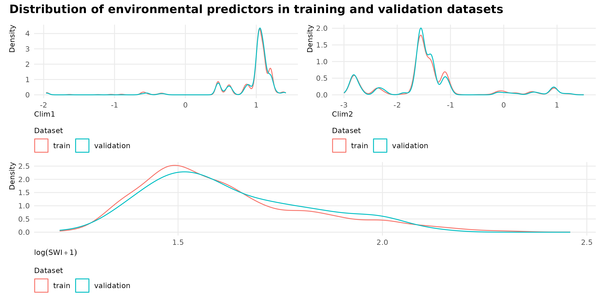

# SampleID <- (Y_raw |># group_by(Site) %>% # Stratified sampling : 90% from Site strata# sample_frac(0.9) |> # Sample_frac(0.9) selects round(n() * 0.9) inventory units within each site. As a consequence, sites with ≤4 inventory units contribute all units to the training set (because round(n*0.9) = n), whereas sites with >4 units contribute ~90% of their units to training.# ungroup())$PlotIDY_raw <-readRDS(here_rel("data","raw_data","Y_raw.rds"))SampleID <- (Y_raw |>filter(type =="train"))$PlotIDY_train <- Y_raw |>filter(PlotID %in% SampleID)Y_val <- Y_raw |>filter(!(PlotID %in% Y_train$PlotID)) # The remaining units in each site form the external validation dataset.
We split our data in a training set including all sampling sites with 4 or less inventory units and a stratified random sampling of 90% of inventory units by sampling site with more than 4 inventory units. The remaining part of the dataset was used for external validation.
Distribution of inventory units across inventory networks in training and validation datasets.
type
GuyENTRY
GuyaDiv
GuyaFor
train
93.5
90.2
88.3
validation
6.5
9.8
11.7
We check for biais in the train/validation split by comparing the distribution of variables across inventory units in the training and validation datasets:
Code
if (!file.exists(here_rel("notebook", "figs","fig-trainval-split.png"))) {P1 <- Shp_plots |>ggplot(aes(x = Clim1, color = type)) +geom_density() +labs(x ="Clim1", y ="Density", color ="Dataset") +theme(legend.position ="bottom")P2 <- Shp_plots |>ggplot(aes(x = Clim2, color = type)) +geom_density() +labs(x ="Clim2", y ="Density", color ="Dataset") +theme(legend.position ="bottom")P3 <-Shp_plots |>ggplot(aes(x =log(SWI+1), color = type)) +geom_density() +labs(x =expression(log(SWI+1)), y ="Density", color ="Dataset") +theme(legend.position ="bottom")g <- patchwork::wrap_plots(P1 | P2, P3, ncol =1) + patchwork::plot_annotation(title ="Distribution of environmental predictors in training and validation datasets") &theme(legend.position ="bottom") ggsave(plot = g, filename =here_rel("notebook", "figs","fig-trainval-split.png"), bg ="white", width =10,height =5)} knitr::include_graphics(here_rel("notebook", "figs","fig-trainval-split.png"))

Figure 1: Distribution of inventory units across inventory networks in training and validation datasets.
Source Code
---title: "Validation and train data"format: html: code-fold: true---```{r setup, include=FALSE}knitr::opts_chunk$set( fig.align = "center", fig.retina = 3, fig.width = 6, fig.height = (6 * 0.618), out.width = "80%", collapse = TRUE, dev = "ragg_png")options( digits = 3, width = 120, dplyr.summarise.inform = FALSE, knitr.kable.NA = "")here_rel <- function(...) { fs::path_rel(here::here(...))}``````{r libraries-data, warning=FALSE, message=FALSE}library(tidyverse)library(readr)library(gt)library(gtExtras)library(leaflet)library(sf)library(terra)source(here_rel("R", "funs_data.R"))source(here_rel("R", "funs_graphics.R"))source(here_rel("R", "funs_plot_tables.R"))theme_set(theme_public())```# Stratified splitting train / validation datasets```{r}#| echo: false#| message: falsePlot_table_path <-here_rel("data", "inventory_data", "Plot_description.csv")Shp_plots_path <-here_rel("data", "shp", "GF_sampling.shp")Guyane_path <-here_rel("data", "shp", "guyane.shp")Plot_table <-read_csv2(Plot_table_path)Shp_plots <-read_sf(Shp_plots_path, quiet =TRUE)Guyane <-read_sf(Guyane_path, quiet =TRUE) |>st_transform("EPSG:4326")``````{r}#| eval: false#| echo: true#| code-fold: false# SampleID <- (Y_raw |># group_by(Site) %>% # Stratified sampling : 90% from Site strata# sample_frac(0.9) |> # Sample_frac(0.9) selects round(n() * 0.9) inventory units within each site. As a consequence, sites with ≤4 inventory units contribute all units to the training set (because round(n*0.9) = n), whereas sites with >4 units contribute ~90% of their units to training.# ungroup())$PlotIDY_raw <-readRDS(here_rel("data","raw_data","Y_raw.rds"))SampleID <- (Y_raw |>filter(type =="train"))$PlotIDY_train <- Y_raw |>filter(PlotID %in% SampleID)Y_val <- Y_raw |>filter(!(PlotID %in% Y_train$PlotID)) # The remaining units in each site form the external validation dataset.```We split our data in a training set including all sampling sites with 4 or less inventory units and a stratified random sampling of 90% of inventory units by sampling site with more than 4 inventory units. The remaining part of the dataset was used for external validation.```{r}#| label: tab-trainval-split#| tbl-cap: "Distribution of inventory units across inventory networks in training and validation datasets."Shp_plots |>st_drop_geometry() |>group_by(type, DB) |>summarise(n =n()) |>ungroup() |>group_by(DB) |>mutate(perc = n /sum(n) *100) |>select(-n) |>pivot_wider(names_from = DB, values_from = perc, values_fill =0) |>gt() |>fmt_number(columns =c("GuyaDiv", "GuyaFor", "GuyENTRY"), decimals =1) |>opts_theme()```We check for biais in the train/validation split by comparing the distribution of variables across inventory units in the training and validation datasets:```{r}#| label: fig-trainval-split#| fig-cap: "Distribution of inventory units across inventory networks in training and validation datasets."if (!file.exists(here_rel("notebook", "figs","fig-trainval-split.png"))) {P1 <- Shp_plots |>ggplot(aes(x = Clim1, color = type)) +geom_density() +labs(x ="Clim1", y ="Density", color ="Dataset") +theme(legend.position ="bottom")P2 <- Shp_plots |>ggplot(aes(x = Clim2, color = type)) +geom_density() +labs(x ="Clim2", y ="Density", color ="Dataset") +theme(legend.position ="bottom")P3 <-Shp_plots |>ggplot(aes(x =log(SWI+1), color = type)) +geom_density() +labs(x =expression(log(SWI+1)), y ="Density", color ="Dataset") +theme(legend.position ="bottom")g <- patchwork::wrap_plots(P1 | P2, P3, ncol =1) + patchwork::plot_annotation(title ="Distribution of environmental predictors in training and validation datasets") &theme(legend.position ="bottom") ggsave(plot = g, filename =here_rel("notebook", "figs","fig-trainval-split.png"), bg ="white", width =10,height =5)} knitr::include_graphics(here_rel("notebook", "figs","fig-trainval-split.png"))```